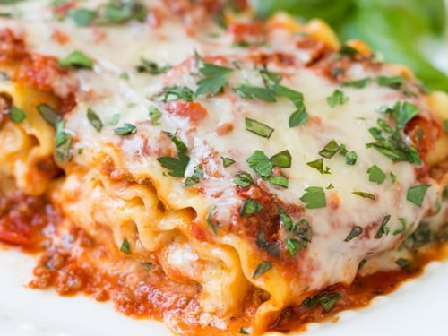

Lasagne

A delicious lasagne packed with layers of pasta, beef mince and tomato
sauce, finished
with fresh herbs and melted, creamy mozzarella on top.
A perfect option for a warm, hearty meal on a cold night, or to freeze and
eat throughout the week.
Thought to have originated in Italy almost 1000
years ago, lasange has become a staple meal in
the households of families
around the world. It's simple to make and absolutely delicious.
Difficulty: Easy
Serves: 6
Preperation Time: 25 minutes
Cooking Time: 1 hour, 30 minutes
Ingredients:
- 800g passata
- 750g lean beef mince
- 550g White sauce
- 200ml hot beef stock
- 300g fresh lasagne sheets
- 125g ball of mozzarella, torn into thin strips
- 90g prosciutto (optional)
- Olive oil
- Grated nutmeg (optional)
Method:
-
To make the meat sauce, heat 2 tbsp olive oil in a pan and cook all the
lean beef mince in two batches
for about 10 minutes. The beef should be
browned over completely before it is considered cooked.
-
If you chose to include it, finely chop 4 slices of prosciutto and stir
it through the mixture in the pan.
-
Pour all the passata and hot beef stock into the pan. Add a little grated
nutmeg if you wish, then season
with salt and pepper.
-
Bring the mixture up to the boil, then simmer for around 30 minutes and/or
until the sauce looks rich.
While the sauce is simmering, pre-heat your oven
to 180C for fan ovens, otherwise 160C/Gas Mark 4
and lightly oil an ovenproof
dish (around 30cm x 20cm).
-
When you are satisfied with the sauce, spoon some of it into the ovenproof
dish until there is a nice
layer of the sauce covering the bottom of the dish.
Cover the layer of sauce with a few pasta sheets and
then drizzle 130g white
sauce over the pasta sheets. Repeat this three times, using all the remaining
white sauce on the third layer.
-
Scatter the torn mozzarella over the top. If you chose to include the prosciutto,
arrange it on top also.
-
Put the ovenproof dish in the oven for 45 minutes, until the top of the dish is
bubbling and lightly-browned.
-
Remove the dish from the oven and allow to cool slightly before eating. Enjoy!
Return Home